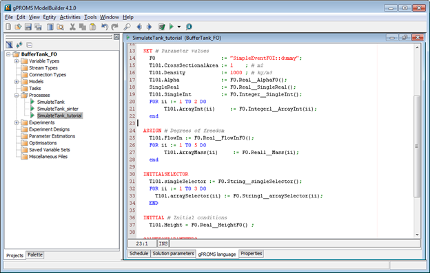
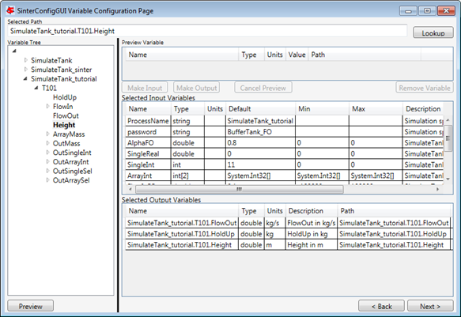
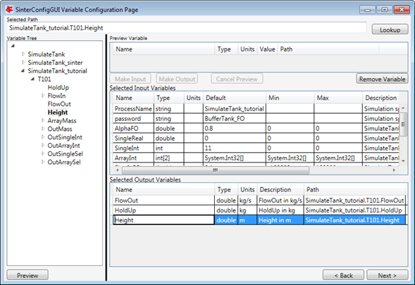

gPROMS Configuration¶
gPROMS is significantly different from the other simulators SimSinter supports, and the workflow is also significantly different. If you plan to use gPROMS simulations with FOQUS, the CCSI team strongly encourages you to read the “SimSinter gPROMS Technical Manual,” which is included in the FOQUS distribution. The default location is at C:Program Files (x86)foqus \foqus \doc. It is also available on the CCSI website.
Unlike Aspen, changes must be made to the gPROMS simulation process in order to work with SimSinter. Therefore, this section consists of a series of tutorials for every step of configuring gPROMS and SimSinter to work together. All the tutorials are required in order to have a gPROMS simulation be runnable with SimSinter. They are divided up to make later reference easier.
Configuring gPROMS to Work with SimSinter¶
Unlike Aspen, changes have to be made to the gPROMS simulation process in order to work with SimSinter. In fact, SimSinter does not define the inputs to the simulation, gPROMS does. On the other hand, gPROMS does not determine the outputs, SimSinter does. This odd and counter-intuitive situation is the result of how gPROMS gO:Run_XML is designed.
The modification to the gPROMS simulation must be done by a developer with an intimate understanding of the simulation, usually the simulation writer. In some cases additional variables may need to be added to handle an extra step between taking the input and inserting it into the variable where gPROMS will use the data.
Open the gPROMS simulation file (ends in .gPJ) in ModelBuilder 4.0 or newer. For this example, use the gPROMS install test file “BufferTank_FO.gPJ”, found in:
C:\ SimSinterFilesgPROMS_Test\ BufferTank_FO.gPJ
Double-click on the .gPJ file to open ModelBuilder, as shown in Figure [fig.sinter.gproms.openbuffertank].
Opening BufferTank in gPROMS Model Builder
This simulation was originally a simple BufferTank simulation. However, it was modified into an example of all the different kinds of variables the user can pass into gPROMS via SimSinter. Therefore, it has a lot of extra variables that do not really do anything, with very generic names, like “SingleInt.” The simulation consists of a single model, “BufferTank”, that contains all the simulation logic, and most of the parameter and variable declarations. The SimSinter simulation will change some of these PARAMETERS and VARIABLES to change the output of the simulation.

Viewing BufferTank in gPROMS Model Builder
The example file contains two Processes. SimSinter can only run gPROMS Processes, so any gPROMS simulation must be driven from a Process. “SimulateTank” is the original BufferTank example with hardcoded values, “SimulateTank_Sinter” contains the example of setting values with Sinter. The “SimulateTank_Sinter” example will be recreated in this tutorial.

Viewing SimulateTank in gPROMS Model Builder
First copy the existing hard-coded Process “SimulateTank”.

Copying SimulateTank
Right-click on Processes and select Paste to make a new process.

Paste SimulateTank
The new process will be named “SimulateTank_1”. Rename the process by right-clicking on it and selecting Rename.

Rename SimulateTank
Now open up the new “SimulateTank_tutorial” Process. It has the same hard-coded values as “SimulateTank”.
Opening SimulateTank_tutorial
[fig.sinter.gproms.opensimulatetank_tutorial]
First, the user needs to add a FOREIGN_OBJECT named “FO” in the PARAMETER section. Then the user needs to set that FOREIGN_OBJECT to “SimpleEventFOI::dummy” in the SET section. This FOREIGN_OBJECT is how inputs are received from SimSinter.

Adding the FOREIGN_OBJECT
This particular simulation has a large number of input variables that simply demonstrate how to set different types. These are named based on their type. Any variable named similarly to “SingleInt” or “ArraySelector” can be safely ignored for this tutorial. For a full list of the methods for setting different types see the later section specifically for covering that. Any variable in the simulation can be an input, whether it is defined in the Process or one of the models referenced by the process, or in a model referenced by a model,� etc. All inputs take their values from the FOREIGN_OBJECT defined, followed by the type name, two underscores, the input variable name, an open parenthesis, an optional index variable (for arrays), and closed with a close parenthesis and a semicolon. For a scalar:
FO.<Type>__<InputName>();
SimSinter can only handle arrays inputted in FOR loops such as:
FOR ii := 1 TO <array size> DO <ArrayName>(ii) := FO.<Type>1__<InputName>(ii); END
For this example the user only really needs to set “T101.Alpha” in PARAMETER, “T101.FlowIn” in ASSIGN, and “T101.Height” in INITIAL.
Setting up Input Variables
Now test “SimulateTank_tutorial” by selecting it and clicking the green Simulate triangle. When the simulation runs it will ask for every input variable the user has defined. For the example variables that do not effect the simulation, such as “SingleInt”, any valid value will work. For the values that do effect the simulation, these values work:
REAL__AlphaFO = .08 REAL__FlowInFO = 14 REAL__HeightFO = 7.5
Testing SimulateTank_Tutorial
Exporting an Encrypted Simulation to Run with SimSinter¶
SimSinter can only run encrypted gPROMS simulations. These files have the .gENCRYPT extension. If the additions to the simulation for reading input variables ran correctly in the previous section, the user is ready to export that process for use by SimSinter.
Right-click on the Process to export (“SimulateTank_tutorial”) and select Export.

Select “Export”
In the resulting Export window, select Encrypted input file for simulation by gO:RUN and click OK.

Select “Encrypted Input File”
On the second page, set the Export directory to a directory the user can find. Preferably one without any other files in it so the user will not be confused by the output. If the filename or the Encryption password are not changed, SimSinter will be able to guess the password. If either of those values are changed, the user will have to set the correct password in the SinterConfigGUI password setting. A Decryption password is probably unnecessary, as the user has the original file. SimSinter does not use it. When the user has finished setting up these fields, click Export Entity.

Export Entity Page
The resulting .gENCRYPT file will be saved to a subdirectory named “Input” in the save directory specified in Step 3. The first part of the name will be identical to the .gPJ filename. The user should not rename it because the SinterConfig file will guess this name, and currently changing it requires editing the SinterConfig file.
Configuring SimSinter to Work with gPROMS¶
Now that the gPROMS process has been prepared, the SimSinter configuration can be done.
The “SinterConfigGUI” can be launched from FOQUS, via the Create/Edit button found in File\(\rightarrow\) Add/Update Model to Turbine or “SinterConfigGUI” may be run on its own by selecting CCSI Tools \(\rightarrow\) FOQUS \(\rightarrow\) SinterConfigGUI from the Start menu.
The splash window displays, as shown in Figure [fig.sinter.gproms.splash]. The user may click the splash screen to proceed, or wait 10 seconds for it to close automatically.

SinterConfigGUI Splash Screen
The SinterConfigGUI Open Simulation window displays (Figure [fig.sinter.gproms.openpage]). If “SinterConfigGUI” was opened from FOQUS, the filename text box already contains the correct file. To proceed immediately click Open File and Configure Variables or click Browse to search for the file.
This tutorial will use the .gPJ file edited in Section 1.1. Remember that SinterConfigGUI cannot read the .gENCRYPT file that is actually run by SimSinter. Instead, the user must open the .gPJ file the ModelBuilder uses.
Once the file is selected, click Open File and Configure Variables.

SinterConfigGUI Open Simulation Screen
The SinterConfigGUI Simulation Meta-Data window displays as shown in (Figure [fig.sinter.gproms.savename]). Unlike the other simulations, gPROMS has not started up in any way. SinterConfigGUI does not get information from gPROMS directly, it must parse the .gPJ file instead.
The first and most important piece of meta-data is the SimSinter Save Location at the top of the window. This is where the Sinter configuration file is saved. The system suggests a file location and name. The user should confirm this is the intended location of the files to not accidently overwrite other files. Enter the remaining fields to provide the meta-data to describe the simulation that was just opened and then click Next.
SinterConfigGUI Simulation Meta-Data Save Text Box
The SinterConfigGUI Variable Configuration Page window displays as shown in Figure [fig.sinter.gproms.settings]. gPROMS has two settings, ProcessName and password. SimSinter has guessed at both the ProcessName and the password. For this example the password is correct, but the ProcessName is incorrect. SimulateTank is the process that isn’t configured to work with SimSinter. On the left side we can see the Variable Tree. The root is connected to the three processes defined in this .gPJ file. First, change the ProcessName to “SimulateTank_tutorial”.
SinterConfigGUI gPROMS Settings Configuration
After changing the ProcessName, click Enter (or clicks away). The Selected Input Variables will automatically display all of the available input variables. This is because the input variables have been configured in gPROMS, and SimSinter has parsed them out of the .gPJ file, as long as you have the ProcessName set correctly. This also means that the user cannot add new input variables in SinterConfigGUI, only in gPROMS. SimSinter also does its best to identify the Default values, Min, and Max of the variables. The default can only be calculated from the file if it was defined purely in terms of actual numbers. SimSinter cannot evaluate other variables or functions. Therefore,
DEFAULT 2 * 3.1415 * 12
will work. However,
DEFAULT 2 * PI * radius
will not work, because SimSinter does not know the value of either PI or radius, and SimSinter will just set the default to 0.
Min and Max values are taken from the variable type, if there is one.
SinterConfigGUI Automatically Displays Input Variables
Now the output values can be entered. Expand the “SimulateTank_tutorial” Process on the Variable Tree, expand the “T101” model, and then double-click on “FlowOut” to make it the Preview Variable. Notice that the Make Input button is disabled. As stated above, the user cannot make new Input Variables in SinterConfigGUI. Only Make Output is allowed.

Preview of the FlowOut Variable
If Make Output is clicked, “FlowOut” will be made an Output Variable as shown in Figure [fig.sinter.gproms.outputs2]. The Description can be updated, but SimSinter made a good guess in this example; therefore, there is no need to change the description.

FlowOut as an Input Variable
By the same method, make Output Variables “HoldUp” and “Height.”
HoldUp and Height Output Variables
The variables names should be made shorter. Simply click on the Name column and change the name to your preferred name.
Editing Variable Names
For future testing, make sure the defaults are good values. The only three input variables that matter have the following defaults:
AlphaFO = 0.8 FlowInFO = 14 HeightFO = 7.5

Editing Defaults
When finished making output variables, click Next at the bottom of the variables page. If there were any input vectors, the Vector Default Initialization page will display. Here the default values of the vectors may be edited.

Editing Vectors
Finally, click Finish and save your configuration file. Your gPROMS simulation should now be runnable from FOQUS.